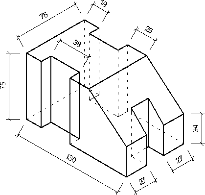

Two objects need to be
Draw pictorial views (4 and 2 in oblique projection) of the items shown below.
A solid steelblock is shown in an isometric projection.
Please submit this assignment on the due date to your lecturer!